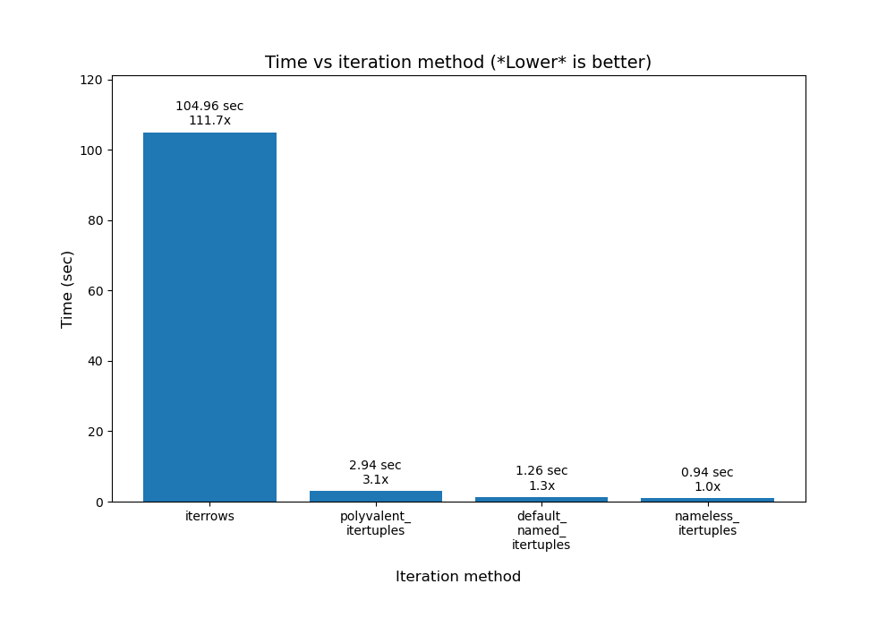
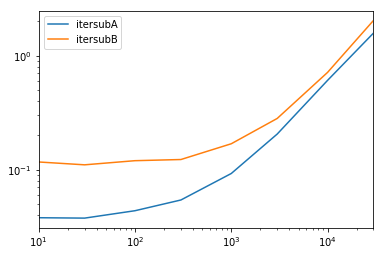

{kind=link}

Как я могу перебирать строки в DataFrame Pandas?
Спросил 11 лет, 1 месяц назад
Изменено 1 месяц назад
Просмотрено 7,4 млн раз
У меня есть кадр данных pandas df:
c1 c2
0 10 100
1 11 110
2 12 120
Как мне перебирать строки этого кадра данных? Для каждой строки я хочу получить доступ к ее элементам (значениям в ячейках) по имени столбцов. Например:
for row in df.rows:
print(row['c1'], row['c2'])
Я нашел аналогичный вопрос , который предлагает использовать любой из них:
Но я не понимаю, что rowэто за объект и как с ним можно работать.
Отсортировано по:
Наивысший балл (по умолчанию) В тренде (недавние голоса имеют большее значение) Дата изменения (сначала самые новые) Дата создания (сначала самое старое)
1
DataFrame.iterrows— это генератор, который выдает как индекс, так и строку (как серию):
import pandas as pd
df = pd.DataFrame({'c1': [10, 11, 12], 'c2': [100, 110, 120]})
df = df.reset_index() # make sure indexes pair with number of rows
for index, row in df.iterrows():
print(row['c1'], row['c2'])
10 100
11 110
12 120
Обязательный отказ от документации
Перебор объектов pandas обычно происходит медленно . Во многих случаях перебор строк вручную не требуется, и его можно избежать с помощью одного из следующих подходов:
Другие ответы в этой теме более подробно рассматривают альтернативы функциям iter*, если вам интересно узнать больше.
Хоть и .iterrows()работает, но примерно в 600 раз медленнее, чем самый быстрый метод. В своем ответе здесь я тестирую скорость и демонстрирую 13 способов перебора DataFrame Pandas . .iterrows()является вторым по скорости. 11 из 13 техник быстрее, чем .iterrows(), и большинство из них по-прежнему очень просты, если вы увидите пример того, как их выполнять.
– Габриэль Стейплс 4 ноя 2023 в 16:11
Добавить комментарий
+100
Как перебирать строки в DataFrame в Pandas
Ответ: НЕ * !
Итерация в Pandas — это антишаблон, и ее следует делать только тогда, когда вы исчерпали все остальные варианты. Не следует использовать функцию с " iter" в имени более чем на несколько тысяч строк, иначе вам придется привыкнуть к долгому ожиданию .
Хотите распечатать DataFrame? Использовать DataFrame.to_string().
Вы хотите что-то посчитать? В этом случае ищите методы в следующем порядке (список изменен отсюда ) :
iterrowsи itertuples(оба получили много голосов в ответах на этот вопрос) следует использовать в очень редких случаях, например, при создании объектов строк/кортежей имен для последовательной обработки, что на самом деле является единственным, для чего эти функции полезны.
Обращение к властям
На странице документации по итерации есть огромное красное предупреждающее поле, в котором говорится:
Перебор объектов pandas обычно происходит медленно. Во многих случаях перебор строк вручную не требуется [...].
* На самом деле это немного сложнее, чем «не делать». df.iterrows()это правильный ответ на этот вопрос, но лучше «векторизировать свои операции». Я признаю, что существуют обстоятельства, при которых итерации избежать невозможно (например, некоторые операции, результат которых зависит от значения, вычисленного для предыдущей строки). Однако чтобы понять, когда это произойдет, требуется некоторое знакомство с библиотекой. Если вы не уверены, нужно ли вам итеративное решение, скорее всего, нет. PS: Чтобы узнать больше о причинах написания этого ответа, перейдите к самому низу.
Быстрее, чем цикл: векторизация , Cython
Большое количество базовых операций и вычислений «векторизуются» пандами (либо через NumPy, либо через Cythonized функции). Сюда входят арифметика, сравнения, (большинство) сокращений, изменение формы (например, поворот), соединения и операции группировки. Просмотрите документацию по Essential Basic Functionality , чтобы найти подходящий векторизованный метод для вашей проблемы.
Если такового не существует, смело напишите свой собственный, используя собственные расширения Cython .
Следующая лучшая вещь: понимание списков *
Понимание списков должно стать вашим следующим пунктом назначения, если 1) нет доступного векторизованного решения, 2) производительность важна, но недостаточно важна, чтобы справиться с трудностями, связанными с цитонизированием вашего кода, и 3) вы пытаетесь выполнить поэлементное преобразование. по вашему коду. Существует достаточно доказательств того, что понимание списков происходит достаточно быстро (а иногда и быстрее) для многих распространенных задач Pandas.
Формула проста,
# Iterating over one column - `f` is some function that processes your data
result = [f(x) for x in df['col']]
# Iterating over two columns, use `zip`
result = [f(x, y) for x, y in zip(df['col1'], df['col2'])]
# Iterating over multiple columns - same data type
result = [f(row[0], ..., row[n]) for row in df[['col1', ...,'coln']].to_numpy()]
# Iterating over multiple columns - differing data type
result = [f(row[0], ..., row[n]) for row in zip(df['col1'], ..., df['coln'])]
Если вы можете инкапсулировать свою бизнес-логику в функцию, вы можете использовать понимание списка, которое ее вызывает. Вы можете заставить работать сколь угодно сложные вещи благодаря простоте и скорости необработанного кода Python.
Предостережения
Понимание списков предполагает, что с вашими данными легко работать — это означает, что ваши типы данных согласованы и у вас нет NaN, но это не всегда может быть гарантировано.
*Ваш пробег может отличаться по причинам, указанным в разделе «Предостережения» выше.
Очевидный пример
Давайте продемонстрируем разницу на простом примере добавления двух столбцов pandas A + B. Это векторизуемая операция, поэтому будет легко сравнить производительность методов, обсуждавшихся выше.
Код сравнительного анализа, для справки . Строка внизу измеряет функцию, написанную на numandas — стиле Pandas, который сильно смешивается с NumPy для достижения максимальной производительности. Следует избегать написания кода numandas, если вы не знаете, что делаете. Придерживайтесь API там, где это возможно (т. е. отдавайте предпочтение vec) vec_numpy.
Однако я должен отметить, что не всегда все так гладко. Иногда на вопрос «какой метод операции лучше всего» отвечает «это зависит от ваших данных». Мой совет — протестируйте различные подходы к вашим данным, прежде чем остановиться на одном.
Мое личное мнение *
Большая часть анализа различных альтернатив семейства iter проводилась через призму производительности. Однако в большинстве ситуаций вы, как правило, будете работать с набором данных разумного размера (не более нескольких тысяч или 100 тысяч строк), и производительность будет отходить на второй план после простоты/читабельности решения.
Вот мои личные предпочтения при выборе метода решения проблемы.
Для новичка:
Векторизация (по возможности) ; apply(); Список понятий; itertuples()/ iteritems(); iterrows(); Китон
Для более опытных:
Векторизация (по возможности) ; apply(); Список понятий; Китон; itertuples()/ iteritems();iterrows()
Векторизация преобладает как наиболее идиоматический метод решения любой проблемы, которую можно векторизовать. Всегда стремитесь к векторизации! Если у вас есть сомнения, обратитесь к документации или посмотрите Stack Overflow на предмет существующего вопроса по вашей конкретной задаче.
Я склонен во многих своих постах говорить о том, насколько applyэто плохо, но признаю, что новичку легче понять, что он делает. Кроме того, в этом моем постеapply объяснено довольно много вариантов использования .
Cython занимает последнее место в списке, потому что для правильной реализации требуется больше времени и усилий. Обычно вам никогда не придется писать код с помощью pandas, который требует такого уровня производительности, которого не может удовлетворить даже понимание списка.
* Как и любое личное мнение, пожалуйста, относитесь к нему скептически!
Дальнейшее чтение
* Строковые методы Pandas «векторизованы» в том смысле, что они указаны в серии, но работают с каждым элементом. Базовые механизмы по-прежнему являются итеративными, поскольку строковые операции по своей сути сложно векторизовать.
Почему я написал этот ответ
Общая тенденция, которую я замечаю у новых пользователей, — это задавать вопросы вида «Как я могу перебрать свой df, чтобы сделать X?». Показ кода, который вызывается iterrows()при выполнении чего-либо внутри forцикла. Вот почему. Новый пользователь библиотеки, который не знаком с концепцией векторизации, скорее всего, представит себе код, который решает его проблему, как перебор данных для выполнения чего-либо. Не зная, как перебирать DataFrame, первое, что они делают, это гуглят и попадают сюда, на этот вопрос. Затем они видят принятый ответ, говорящий им, как это сделать, закрывают глаза и запускают этот код, даже не задаваясь сначала вопросом, правильно ли делать итерацию.
Цель этого ответа — помочь новым пользователям понять, что итерация не обязательно является решением каждой проблемы и что могут существовать лучшие, быстрые и более идиоматические решения, и что стоит потратить время на их изучение. Я не пытаюсь начать войну итераций и векторизации, но я хочу, чтобы новые пользователи были информированы при разработке решений своих проблем с помощью этой библиотеки.
И, наконец... TLDR, чтобы подвести итог этому посту.
отредактировано 13 фев в 19:03
31,2 тыс.99 золотых значков6565 серебряных знаков8686 бронзовых знаков
ответ дан 7 апр. 2019 в 10:03
395 тыс.102102 золотых значка727727 серебряных знаков779779 бронзовых знаков
Итерация может быть инструментом, помогающим во время отладки, скажем, с ipdb, особенно во время начальной разработки и понимания крайних случаев.
Каков здесь синтаксис двойной скобки? Что это значит и где это официально задокументировано?df[['col1', ...,'coln']].to_numpy()
– Габриэль Стейплс 22 сен 2023 в 7:55
@GabrielStaples Посмотрите здесь : «... Вы можете передать список столбцов, чтобы []выбрать столбцы в этом порядке. ...»
Что вы хотите выполнить какой-то ввод-вывод в кадре данных, строка за строкой. Например, если вам нужно отправить отдельные строки в какую-то «вещь», какой другой подход вы бы использовали, кроме iterrows. например: отправка строк в сетевой сокет или Kafka в виде отдельных записей. Возможно, вы могли бы использовать что-то вроде .apply, но это довольно запутанное решение. Это можно сделать без использования глобальных переменных с помощью функтора (класса), но полученный код сложно понять.
– Внештатный консультант 8 фев в 12:31
Возможно, стоит упомянуть, что иногда вам не нужно вычислять значение для предыдущей строки, и вместо этого вы можете использовать накопительную функцию, например cumsum()или cummin(). Вот тот, который я решил с помощью.cumprod() .
Показать еще 3 комментария
Сначала подумайте, действительно ли вам нужно перебирать строки в DataFrame. Альтернативы см . в ответе cs95 .
Если вам все еще нужно перебирать строки, вы можете использовать методы ниже. Обратите внимание на некоторые важные предостережения , которые не упоминаются ни в одном другом ответе.
for index, row in df.iterrows():
print(row["c1"], row["c2"])
for row in df.itertuples(index=True, name='Pandas'):
print(row.c1, row.c2)
itertuples()должно быть быстрее, чемiterrows()
Но имейте в виду, согласно документации (на данный момент pandas 0.24.2):
Поскольку iterrows возвращает Series для каждой строки, он не сохраняет dtypes во всех строках (dtypes сохраняются в столбцах для DataFrames). Чтобы сохранить dtypes при переборе строк, лучше использовать itertuples(), который возвращает именованные кортежи значений и который обычно работает намного быстрее, чем iterrows().
Никогда не следует изменять то, что вы повторяете. Это не гарантирует работу во всех случаях. В зависимости от типов данных итератор возвращает копию, а не представление, и запись в нее не будет иметь никакого эффекта.
Вместо этого используйте DataFrame.apply() :
new_df = df.apply(lambda x: x * 2, axis=1)
Имена столбцов будут переименованы в позиционные имена, если они являются недопустимыми идентификаторами Python, повторяются или начинаются с подчеркивания. При большом количестве столбцов (>255) возвращаются обычные кортежи.
Дополнительную информацию см. в документации pandas по итерации .
отредактировано 1 окт. 2023 в 17:58
31,2 тыс.99 золотых значков6565 серебряных знаков8686 бронзовых знаков
ответ дан 7 дек 2016 в 16:41
603822 золотых значка1414 серебряных значков2121 бронзовый знак
Примечание. Вы также можете сказать что-то вроде for row in df[['c1','c2']].itertuples(index=True, name=None):включения в итератор строк только определенных столбцов.
– Брайан Бернс 29 июн 2018 в 7:29
Я не знаю почему, но в моем случае использование name=Nonemake на 50% быстрее.itertuples
– Мухаммад Ясиррони 5 дек 2021 в 7:13
Добавить комментарий
Вам следует использовать df.iterrows(). Хотя итерация строка за строкой не особенно эффективна, поскольку Seriesнеобходимо создавать объекты.
395 тыс.102102 золотых значка727727 серебряных знаков779779 бронзовых знаков
ответ дан 24 мая 2012 в 14:24
104 тыс.3232 золотых значка143143 серебряных знака108108 бронзовых знаков
Я провел небольшое тестирование затрат времени на df.iterrows(), df.itertuples() и zip(df['a'], df['b']) и опубликовал результат в ответе другого вопрос: stackoverflow.com/a/34311080/2142098
– Ричард Вонг 16 дек 2015 в 11:41
Добавить комментарий
Хотя iterrows()это хороший вариант, иногда itertuples()он может быть намного быстрее:
df = pd.DataFrame({'a': randn(1000), 'b': randn(1000),'N': randint(100, 1000, (1000)), 'x': 'x'})
%timeit [row.a * 2 for idx, row in df.iterrows()]
# => 10 loops, best of 3: 50.3 ms per loop
%timeit [row[1] * 2 for row in df.itertuples()]
# => 1000 loops, best of 3: 541 µs per loop
отредактировано 1 июня 2016 в 9:00
ответ дан 20 сен 2015 в 13:52
16,1 тыс.55 золотых значков2424 серебряных значка2525 бронзовых знаков
Похоже, что большая часть разницы во времени в ваших двух примерах связана с тем, что вы, похоже, используете индексацию на основе меток для команды .iterrows() и индексацию на основе целых чисел для команды .itertuples().
@AbeMiessler iterrows()объединяет каждую строку данных в серию, а itertuples()не делает этого.
– мирадуло 13 фев 2017 в 17:30
Я также получаю увеличение более чем в 50 раз, а также i.sstatic.net/HBe9o.png (при переходе на метод доступа attr во втором запуске).
Добавить комментарий
Вы можете использовать df.ilocфункцию следующим образом:
for i in range(0, len(df)):
print(df.iloc[i]['c1'], df.iloc[i]['c2'])
отредактировано 8 янв. 2022 в 22:42
13,6 тыс.1616 золотых значков5050 серебряных значков8383 бронзовых знака
ответ дан 7 сен 2016 в 12:56
269711 золотой значок1414 серебряных значков1212 бронзовых знаков
Это единственный известный мне действенный метод, если вы хотите сохранить типы данных, а также обращаться к столбцам по имени. itertuplesсохраняет типы данных, но избавляется от любого имени, которое ему не нравится. iterrowsделает наоборот.
– Кен Уильямс 18 янв. 2018 в 19:22
Добавить комментарий
Вы также можете использовать df.apply()его для перебора строк и доступа к нескольким столбцам для функции.
def valuation_formula(x, y):
return x * y * 0.5
df['price'] = df.apply(lambda row: valuation_formula(row['x'], row['y']), axis=1)
Обратите внимание, что axis=1здесь то же самое, что и axis='columns', и используется применение функции к каждой строке , а не к каждому столбцу . Если не указано, по умолчанию функция применяется к каждому столбцу .
отредактировано 18 сен 2023 в 22:55
46,2 тыс.2121 золотой значок242242 серебряных знака324324 бронзовых знака
ответ дан 1 июня 2015 в 6:24
566533 золотых значка2323 серебряных значка2626 бронзовых знаков
Обратите внимание, что applyон не «перебирает» строки, а применяет функцию по строкам. Приведенный выше код не будет работать, если вам действительно нужны итерации и индексы, например, при сравнении значений в разных строках (в этом случае вы не можете ничего делать, кроме итерации).
– смягченный 4 апр. 2018 в 13:44
@gented, это не совсем так. Например, чтобы получить доступ к значениям в предыдущей строке, вы можете просто добавить новый столбец, содержащий значения предыдущей строки, например: dataframe["val_previous"] = dataframe["val"].shift(1). Затем вы можете получить доступ к этой val_previousпеременной в данной строке, используя этот ответ.
– Габриэль Стейплс 18 сен 2023 в 22:58
Добавить комментарий
Как эффективно выполнять итерации
Если вам действительно нужно перебирать Pandas DataFrame, вы, вероятно, захотите избежать использованияiterrows() . Существуют разные методы, и обычный iterrows()далеко не самый лучший. `itertuples()`` может быть в 100 раз быстрее.
Суммируя:
Различные методы перебора строк в Pandas DataFrame:
Во-первых, для использования во всех приведенных ниже примерах сгенерируйте случайный фрейм данных с миллионом строк и 4 столбцами, например:
df = pd.DataFrame(np.random.randint(0, 100, size=(1000000, 4)), columns=list('ABCD'))
print(df)
Вывод всех этих примеров показан внизу.
start_time = time.clock()
result = 0
for _, row in df.iterrows():
result += max(row['B'], row['C'])
total_elapsed_time = round(time.clock() - start_time, 2)
print("1. Iterrows done in {} seconds, result = {}".format(total_elapsed_time, result))
start_time = time.clock()
result = 0
for row in df.itertuples(index=False):
result += max(row.B, row.C)
total_elapsed_time = round(time.clock() - start_time, 2)
print("2. Named Itertuples done in {} seconds, result = {}".format(total_elapsed_time, result))
start_time = time.clock()
result = 0
for(_, col1, col2, col3, col4) in df.itertuples(name=None):
result += max(col2, col3)
total_elapsed_time = round(time.clock() - start_time, 2)
print("3. Itertuples done in {} seconds, result = {}".format(total_elapsed_time, result))
start_time = time.clock()
result = 0
for row in df.itertuples(index=False):
result += max(row[df.columns.get_loc('B')], row[df.columns.get_loc('C')])
total_elapsed_time = round(time.clock() - start_time, 2)
print("4. Polyvalent Itertuples working even with special characters in the column name done in {} seconds, result = {}".format(total_elapsed_time, result))
Вывод всего кода и примеров выше:
A B C D
0 41 63 42 23
1 54 9 24 65
2 15 34 10 9
3 39 94 82 97
4 4 88 79 54
... .. .. .. ..
999995 48 27 4 25
999996 16 51 34 28
999997 1 39 61 14
999998 66 51 27 70
999999 51 53 47 99
[1000000 rows x 4 columns]
1. Iterrows done in 104.96 seconds, result = 66151519
2. Named Itertuples done in 1.26 seconds, result = 66151519
3. Itertuples done in 0.94 seconds, result = 66151519
4. Polyvalent Itertuples working even with special characters in the column name done in 2.94 seconds, result = 66151519
График этих результатов от @Gabriel Staples в его ответе здесь :

Смотрите также
отредактировано 11 окт. 2023 в 5:07
46,2 тыс.2121 золотой значок242242 серебряных знака324324 бронзовых знака
ответ дан 19 дек 2019 в 16:02
170511 золотой значок1919 серебряных знаков2626 бронзовых знаков
Добавить комментарий
Я искал, как перебирать строки и столбцы , и закончил вот так:
for i, row in df.iterrows():
for j, column in row.iteritems():
print(column)
отредактировано 11 июн 2020 в 13:37
1
ответ дан 17 янв. 2018 в 9:41
235111 золотой значок2424 серебряных значка2222 бронзовых знака
Добавить комментарий
У нас есть несколько вариантов сделать то же самое, и многие люди поделились своими ответами.
Я нашел два следующих метода простыми и эффективными:
Пример:
import pandas as pd
inp = [{'c1':10, 'c2':100}, {'c1':11,'c2':110}, {'c1':12,'c2':120}]
df = pd.DataFrame(inp)
print (df)
# With the iterrows method
for index, row in df.iterrows():
print(row["c1"], row["c2"])
# With the itertuples method
for row in df.itertuples(index=True, name='Pandas'):
print(row.c1, row.c2)
Примечание: itertuples() должен работать быстрее, чем iterrows().
отредактировано 4 сен 2022 в 23:06
1
ответ дан 24 ноя 2021 в 12:39
15841818 серебряных знаков2525 бронзовых знаков
Добавить комментарий
Вы можете написать свой собственный итератор, который реализуетnamedtuple
from collections import namedtuple
def myiter(d, cols=None):
if cols is None:
v = d.values.tolist()
cols = d.columns.values.tolist()
else:
j = [d.columns.get_loc(c) for c in cols]
v = d.values[:, j].tolist()
n = namedtuple('MyTuple', cols)
for line in iter(v):
yield n(*line)
Это напрямую сравнимо с pd.DataFrame.itertuples. Я стремлюсь выполнить ту же задачу с большей эффективностью.
Для данного кадра данных с моей функцией:
list(myiter(df))
[MyTuple(c1=10, c2=100), MyTuple(c1=11, c2=110), MyTuple(c1=12, c2=120)]
Или с pd.DataFrame.itertuples:
list(df.itertuples(index=False))
[Pandas(c1=10, c2=100), Pandas(c1=11, c2=110), Pandas(c1=12, c2=120)]
Комплексное тестирование
Мы проверяем, делаем ли все столбцы доступными и разделяем их на подгруппы.
def iterfullA(d):
return list(myiter(d))
def iterfullB(d):
return list(d.itertuples(index=False))
def itersubA(d):
return list(myiter(d, ['col3', 'col4', 'col5', 'col6', 'col7']))
def itersubB(d):
return list(d[['col3', 'col4', 'col5', 'col6', 'col7']].itertuples(index=False))
res = pd.DataFrame(
index=[10, 30, 100, 300, 1000, 3000, 10000, 30000],
columns='iterfullA iterfullB itersubA itersubB'.split(),
dtype=float
)
for i in res.index:
d = pd.DataFrame(np.random.randint(10, size=(i, 10))).add_prefix('col')
for j in res.columns:
stmt = '{}(d)'.format(j)
setp = 'from __main__ import d, {}'.format(j)
res.at[i, j] = timeit(stmt, setp, number=100)
res.groupby(res.columns.str[4:-1], axis=1).plot(loglog=True);

отредактировано 7 нояб. 2017 в 4:29
ответ дан 7 ноября 2017 в 4:15
292 тыс.6262 золотых значка496496 серебряных знаков636636 бронзовых знаков
Для людей, которые не хотят читать код: синяя линия — это intertuples, оранжевая линия — это список итераторов через блок доходности. interrowsне сравнивается.
– Джеймс Л. 1 дек 2017 в 16:06
Добавить комментарий
Чтобы зациклить все строки в dataframeвы можете использовать:
for x in range(len(date_example.index)):
print date_example['Date'].iloc[x]
ответ дан 11 марта 2017 в 22:44
97,3 тыс.3232 золотых значка266266 серебряных знаков274274 бронзовых знака
Если вы хотите, чтобы это работало, вызовите df.columns.get_loc, чтобы получить позицию целочисленного индекса столбца даты (вне цикла), а затем используйте один вызов индексации iloc внутри.
Добавить комментарий
for ind in df.index:
print df['c1'][ind], df['c2'][ind]
395 тыс.102102 золотых значка727727 серебряных знаков779779 бронзовых знаков
ответ дан 2 ноября 2017 в 10:33
6611111 серебряных значков1515 бронзовых знаков
Это цепная индексация. Не используйте это!
Добавить комментарий
Ключевые выводы:
Как перебирать Pandas DataFrameбез итерации
После нескольких недель работы над этим ответом я пришел к следующему:
Вот 13 методов перебора DataFramePandas . Как видите, время, необходимое для этого, сильно различается . Самая быстрая техника примерно в 1363 раза быстрее самой медленной! Ключевой вывод, как говорит здесь @cs95 , — не повторять! Вместо этого используйте векторизацию ( «программирование массивов» ). На самом деле все это означает, что вам следует использовать массивы непосредственно в математических формулах, а не пытаться вручную перебирать массивы. Базовые объекты, конечно, должны это поддерживать, но и Numpy, и Pandas это поддерживают .
Есть много способов использовать векторизацию в Pandas, которые вы можете увидеть на графике и в моем примере кода ниже. При непосредственном использовании массивов базовый цикл по-прежнему имеет место, но (я думаю) в очень оптимизированном базовом коде C, а не в чистом Python.
Полученные результаты
Было протестировано 13 техник, пронумерованных от 1 до 13. Номер и название техники указаны под каждой полосой. Общее время расчета указано над каждым баром. Ниже находится множитель, показывающий, насколько дольше это заняло, чем самый быстрый метод, показанный справа:
Из pandas_dataframe_iteration_vs_vectorization_vs_list_comprehension_speed_tests.svgмоего репозитория eRCaGuy_hello_world (созданного с помощью этого кода ).
Краткое содержание
Понимание списков и векторизация (возможно, с логической индексацией ) — это все, что вам действительно нужно.
Используйте понимание списков (хорошо) и векторизацию (лучше всего). Я думаю, что чистая векторизация всегда возможна, но может потребовать дополнительной работы в сложных вычислениях. Найдите в этом ответе слова «логическое индексирование» , «логический массив» и «логическая маска» (все три — одно и то же), чтобы увидеть некоторые из более сложных случаев, когда таким образом можно использовать чистую векторизацию.
Вот 13 техник, перечисленных в порядке от самого быстрого до самого медленного . Я рекомендую никогда не использовать последние (самые медленные) 3-4 техники.
Эмпирические правила:
Данные испытаний
Предположим, у нас есть следующий DataFrame Pandas. Он имеет 2 миллиона строк с 4 столбцами ( A, B, Cи D), каждый со случайными значениями от -1000до 1000:
df =
A B C D
0 -365 842 284 -942
1 532 416 -102 888
2 397 321 -296 -616
3 -215 879 557 895
4 857 701 -157 480
... ... ... ... ...
1999995 -101 -233 -377 -939
1999996 -989 380 917 145
1999997 -879 333 -372 -970
1999998 738 982 -743 312
1999999 -306 -103 459 745
Я создал этот DataFrame следующим образом:
import numpy as np
import pandas as pd
# Create an array (numpy list of lists) of fake data
MIN_VAL = -1000
MAX_VAL = 1000
# NUM_ROWS = 10_000_000
NUM_ROWS = 2_000_000 # default for final tests
# NUM_ROWS = 1_000_000
# NUM_ROWS = 100_000
# NUM_ROWS = 10_000 # default for rapid development & initial tests
NUM_COLS = 4
data = np.random.randint(MIN_VAL, MAX_VAL, size=(NUM_ROWS, NUM_COLS))
# Now convert it to a Pandas DataFrame with columns named "A", "B", "C", and "D"
df_original = pd.DataFrame(data, columns=["A", "B", "C", "D"])
print(f"df = \n{df_original}")
Тестовое уравнение/расчет
Я хотел продемонстрировать, что все эти методы возможны на нетривиальных функциях или уравнениях, поэтому я намеренно сделал уравнение, которое они вычисляют, требующим:
Уравнение, которое мы будем рассчитывать для каждой строки, следующее. Я составил это произвольно, но думаю, что оно содержит достаточно сложности, чтобы вы могли расширить то, что я сделал, для выполнения любого уравнения, которое вы хотите, в Pandas с полной векторизацией:
В Python приведенное выше уравнение можно записать следующим образом:
# Calculate and return a new value, `val`, by performing the following equation:
val = (
2 * A_i_minus_2
+ 3 * A_i_minus_1
+ 4 * A
+ 5 * A_i_plus_1
# Python ternary operator; don't forget parentheses around the entire
# ternary expression!
+ ((6 * B) if B > 0 else (60 * B))
+ 7 * C
- 8 * D
)
Альтернативно, вы можете написать это так:
# Calculate and return a new value, `val`, by performing the following equation:
if B > 0:
B_new = 6 * B
else:
B_new = 60 * B
val = (
2 * A_i_minus_2
+ 3 * A_i_minus_1
+ 4 * A
+ 5 * A_i_plus_1
+ B_new
+ 7 * C
- 8 * D
)
Любой из них можно обернуть в функцию. Бывший:
def calculate_val(
A_i_minus_2,
A_i_minus_1,
A,
A_i_plus_1,
B,
C,
D):
val = (
2 * A_i_minus_2
+ 3 * A_i_minus_1
+ 4 * A
+ 5 * A_i_plus_1
# Python ternary operator; don't forget parentheses around the
# entire ternary expression!
+ ((6 * B) if B > 0 else (60 * B))
+ 7 * C
- 8 * D
)
return val
Методы
Полный код доступен для загрузки и запуска в моем python/pandas_dataframe_iteration_vs_vectorization_vs_list_comprehension_speed_tests.pyфайле в репозитории eRCaGuy_hello_world .
Вот код для всех 13 техник:
val = [np.NAN]*len(df)
for i in range(len(df)):
if i < 2 or i > len(df)-2:
continue
val[i] = calculate_val(
df["A"][i-2],
df["A"][i-1],
df["A"][i],
df["A"][i+1],
df["B"][i],
df["C"][i],
df["D"][i],
)
df["val"] = val # put this column back into the dataframe
val = [np.NAN]*len(df)
for i in range(len(df)):
if i < 2 or i > len(df)-2:
continue
val[i] = calculate_val(
df.loc[i-2, "A"],
df.loc[i-1, "A"],
df.loc[i, "A"],
df.loc[i+1, "A"],
df.loc[i, "B"],
df.loc[i, "C"],
df.loc[i, "D"],
)
df["val"] = val # put this column back into the dataframe
# column indices
i_A = 0
i_B = 1
i_C = 2
i_D = 3
val = [np.NAN]*len(df)
for i in range(len(df)):
if i < 2 or i > len(df)-2:
continue
val[i] = calculate_val(
df.iloc[i-2, i_A],
df.iloc[i-1, i_A],
df.iloc[i, i_A],
df.iloc[i+1, i_A],
df.iloc[i, i_B],
df.iloc[i, i_C],
df.iloc[i, i_D],
)
df["val"] = val # put this column back into the dataframe
val = [np.NAN]*len(df)
for index, row in df.iterrows():
if index < 2 or index > len(df)-2:
continue
val[index] = calculate_val(
df["A"][index-2],
df["A"][index-1],
row["A"],
df["A"][index+1],
row["B"],
row["C"],
row["D"],
)
df["val"] = val # put this column back into the dataframe
Для всех следующих примеров мы должны сначала подготовить фрейм данных, добавив столбцы с предыдущими и следующими значениями: A_(i-2), A_(i-1)и A_(i+1). Эти столбцы в DataFrame будут называться A_i_minus_2, A_i_minus_1и A_i_plus_1, соответственно:
df_original["A_i_minus_2"] = df_original["A"].shift(2) # val at index i-2
df_original["A_i_minus_1"] = df_original["A"].shift(1) # val at index i-1
df_original["A_i_plus_1"] = df_original["A"].shift(-1) # val at index i+1
# Note: to ensure that no partial calculations are ever done with rows which
# have NaN values due to the shifting, we can either drop such rows with
# `.dropna()`, or set all values in these rows to NaN. I'll choose the latter
# so that the stats that will be generated with the techniques below will end
# up matching the stats which were produced by the prior techniques above. ie:
# the number of rows will be identical to before.
#
# df_original = df_original.dropna()
df_original.iloc[:2, :] = np.NAN # slicing operators: first two rows,
# all columns
df_original.iloc[-1:, :] = np.NAN # slicing operators: last row, all columns
Запуск векторизованного кода, приведенного выше, для создания этих трех новых столбцов занял в общей сложности 0,044961 секунды .
Теперь перейдем к остальным техникам:
val = [np.NAN]*len(df)
for row in df.itertuples():
val[row.Index] = calculate_val(
row.A_i_minus_2,
row.A_i_minus_1,
row.A,
row.A_i_plus_1,
row.B,
row.C,
row.D,
)
df["val"] = val # put this column back into the dataframe
def calculate_new_column_b_value(b_value):
# Python ternary operator
b_value_new = (6 * b_value) if b_value > 0 else (60 * b_value)
return b_value_new
# In this particular example, since we have an embedded `if-else` statement
# for the `B` column, pure vectorization is less intuitive. So, first we'll
# calculate a new `B` column using
# **`apply()`**, then we'll use vectorization for the rest.
df["B_new"] = df["B"].apply(calculate_new_column_b_value)
# OR (same thing, but with a lambda function instead)
# df["B_new"] = df["B"].apply(lambda x: (6 * x) if x > 0 else (60 * x))
# Now we can use vectorization for the rest. "Vectorization" in this case
# means to simply use the column series variables in equations directly,
# without manually iterating over them. Pandas DataFrames will handle the
# underlying iteration automatically for you. You just focus on the math.
df["val"] = (
2 * df["A_i_minus_2"]
+ 3 * df["A_i_minus_1"]
+ 4 * df["A"]
+ 5 * df["A_i_plus_1"]
+ df["B_new"]
+ 7 * df["C"]
- 8 * df["D"]
)
# In this particular example, since we have an embedded `if-else` statement
# for the `B` column, pure vectorization is less intuitive. So, first we'll
# calculate a new `B` column using **list comprehension**, then we'll use
# vectorization for the rest.
df["B_new"] = [
calculate_new_column_b_value(b_value) for b_value in df["B"]
]
# Now we can use vectorization for the rest. "Vectorization" in this case
# means to simply use the column series variables in equations directly,
# without manually iterating over them. Pandas DataFrames will handle the
# underlying iteration automatically for you. You just focus on the math.
df["val"] = (
2 * df["A_i_minus_2"]
+ 3 * df["A_i_minus_1"]
+ 4 * df["A"]
+ 5 * df["A_i_plus_1"]
+ df["B_new"]
+ 7 * df["C"]
- 8 * df["D"]
)
При этом используется логическое индексирование , также известное как логическая маска , для выполнения эквивалента утверждения ifв уравнении. Таким образом, для всего уравнения можно использовать чистую векторизацию, тем самым максимизируя производительность и скорость.
# If statement to evaluate:
#
# if B > 0:
# B_new = 6 * B
# else:
# B_new = 60 * B
#
# In this particular example, since we have an embedded `if-else` statement
# for the `B` column, we can use some boolean array indexing through
# `df.loc[]` for some pure vectorization magic.
#
# Explanation:
#
# Long:
#
# The format is: `df.loc[rows, columns]`, except in this case, the rows are
# specified by a "boolean array" (AKA: a boolean expression, list of
# booleans, or "boolean mask"), specifying all rows where `B` is > 0. Then,
# only in that `B` column for those rows, set the value accordingly. After
# we do this for where `B` is > 0, we do the same thing for where `B`
# is <= 0, except with the other equation.
#
# Short:
#
# For all rows where the boolean expression applies, set the column value
# accordingly.
#
# GitHub CoPilot first showed me this `.loc[]` technique.
# See also the official documentation:
# https://pandas.pydata.org/docs/reference/api/pandas.DataFrame.loc.html
#
# ===========================
# 1st: handle the > 0 case
# ===========================
df["B_new"] = df.loc[df["B"] > 0, "B"] * 6
#
# ===========================
# 2nd: handle the <= 0 case, merging the results into the
# previously-created "B_new" column
# ===========================
# - NB: this does NOT work; it overwrites and replaces the whole "B_new"
# column instead:
#
# df["B_new"] = df.loc[df["B"] <= 0, "B"] * 60
#
# This works:
df.loc[df["B"] <= 0, "B_new"] = df.loc[df["B"] <= 0, "B"] * 60
# Now use normal vectorization for the rest.
df["val"] = (
2 * df["A_i_minus_2"]
+ 3 * df["A_i_minus_1"]
+ 4 * df["A"]
+ 5 * df["A_i_plus_1"]
+ df["B_new"]
+ 7 * df["C"]
- 8 * df["D"]
)
df["val"] = df.apply(
lambda row: calculate_val(
row["A_i_minus_2"],
row["A_i_minus_1"],
row["A"],
row["A_i_plus_1"],
row["B"],
row["C"],
row["D"]
),
axis='columns' # same as `axis=1`: "apply function to each row",
# rather than to each column
)
df["val"] = [
# Note: you *could* do the calculations directly here instead of using a
# function call, so long as you don't have indented code blocks such as
# sub-routines or multi-line if statements.
#
# I'm using a function call.
calculate_val(
A_i_minus_2,
A_i_minus_1,
A,
A_i_plus_1,
B,
C,
D
) for A_i_minus_2, A_i_minus_1, A, A_i_plus_1, B, C, D
in zip(
df["A_i_minus_2"],
df["A_i_minus_1"],
df["A"],
df["A_i_plus_1"],
df["B"],
df["C"],
df["D"]
)
]
df["val"] = [
2 * A_i_minus_2
+ 3 * A_i_minus_1
+ 4 * A
+ 5 * A_i_plus_1
# Python ternary operator; don't forget parentheses around the entire
# ternary expression!
+ ((6 * B) if B > 0 else (60 * B))
+ 7 * C
- 8 * D
for A_i_minus_2, A_i_minus_1, A, A_i_plus_1, B, C, D
in zip(
df["A_i_minus_2"],
df["A_i_minus_1"],
df["A"],
df["A_i_plus_1"],
df["B"],
df["C"],
df["D"]
)
]
df["val"] = [
calculate_val(
row[0],
row[1],
row[2],
row[3],
row[4],
row[5],
row[6],
) for row
in zip(
df["A_i_minus_2"],
df["A_i_minus_1"],
df["A"],
df["A_i_plus_1"],
df["B"],
df["C"],
df["D"]
)
]
df["val"] = [
# Note: you *could* do the calculations directly here instead of using a
# function call, so long as you don't have indented code blocks such as
# sub-routines or multi-line if statements.
#
# I'm using a function call.
calculate_val(
A_i_minus_2,
A_i_minus_1,
A,
A_i_plus_1,
B,
C,
D
) for A_i_minus_2, A_i_minus_1, A, A_i_plus_1, B, C, D
# Note: this `[[...]]` double-bracket indexing is used to select a
# subset of columns from the dataframe. The inner `[]` brackets
# create a list from the column names within them, and the outer
# `[]` brackets accept this list to index into the dataframe and
# select just this list of columns, in that order.
# - See the official documentation on it here:
# https://pandas.pydata.org/docs/user_guide/indexing.html#basics
# - Search for the phrase "You can pass a list of columns to [] to
# select columns in that order."
# - I learned this from this comment here:
# https://stackoverflow.com/questions/16476924/how-to-iterate-over-rows-in-a-dataframe-in-pandas/55557758#comment136020567_55557758
# - One of the **list comprehension** examples in this answer here
# uses `.to_numpy()` like this:
# https://stackoverflow.com/a/55557758/4561887
in df[[
"A_i_minus_2",
"A_i_minus_1",
"A",
"A_i_plus_1",
"B",
"C",
"D"
]].to_numpy() # NB: `.values` works here too, but is deprecated. See:
# https://pandas.pydata.org/pandas-docs/stable/reference/api/pandas.DataFrame.values.html
]
Вот еще раз результаты:
forТакже используя предварительно сдвинутые ряды в технике 4- х петель.
Я хотел посмотреть, даст ли удаление этой ifпроверки и использование предварительно сдвинутых строк в forметодах с четырьмя циклами большой эффект:
if i < 2 or i > len(df)-2:
continue
...поэтому я создал этот файл со следующими изменениями: pandas_dataframe_iteration_vs_vectorization_vs_list_comprehension_speed_tests_mod.py. Найдите в файле «MOD:», чтобы найти 4 новых модифицированных метода.
Было лишь небольшое улучшение. Вот результаты применения этих 17 техник, причём 4 новых имеют слово _MOD_в начале названия, сразу после номера. На этот раз это более 500 тысяч строк, а не 2 миллиона:
Еще.iterrtuples()
На самом деле нюансов при использовании больше .itertuples(). Чтобы углубиться в некоторые из них, прочитайте этот ответ @Romain Capron . Вот гистограмма, которую я построил на основе его результатов:
Мой код построения графиков его результатов находится python/pandas_plot_bar_chart_better_GREAT_AUTOLABEL_DATA.pyв моем репозитории eRCaGuy_hello_world .
Будущая работа
Использование Cython (Python, скомпилированный в код C) или просто необработанные функции C, вызываемые Python, потенциально может быть быстрее, но я не собираюсь делать это для этих тестов. Я бы рассматривал и тестировал эти варианты только для большой оптимизации.
В настоящее время я не знаю Cython и не чувствую необходимости его изучать. Как вы можете видеть выше, простое правильное использование чистой векторизации уже работает невероятно быстро, обрабатывая 2 миллиона строк всего за 0,1 секунды, или 20 миллионов строк в секунду.
Рекомендации
Преобразуйте этот код Python в красивое уравнение, которое я могу вставить в Stack Overflow:
val = (
2 * A_i_minus_2
+ 3 * A_i_minus_1
+ 4 * A
+ 5 * A_i_plus_1
# Python ternary operator; don't forget parentheses around the entire ternary expression!
+ ((6 * B) if B > 0 else (60 * B))
+ 7 * C
- 8 * D
)
Смотрите также
В информатике программирование массивов относится к решениям, которые позволяют применять операции ко всему набору значений одновременно. Такие решения обычно используются в научных и инженерных целях.
Современные языки программирования, поддерживающие программирование массивов (также известные как векторные или многомерные языки), были разработаны специально для обобщения операций над скалярами для прозрачного применения к векторам, матрицам и многомерным массивам. К ним относятся APL, J, Fortran, MATLAB, Analytica, Octave, R, Cilk Plus, Julia, Perl Data Language (PDL). В этих языках операцию, которая работает с целыми массивами, можно назвать векторизованной операцией 1 независимо от того, выполняется ли она на векторном процессоре, реализующем векторные инструкции.
...Основываясь на моих результатах, я бы сказал, что это лучшие подходы в следующем порядке: лучшие в первую очередь:
Я не тестировал Cython.
1
ответ дан 11 окт. 2023 в 4:54
46,2 тыс.2121 золотой значок242242 серебряных знака324324 бронзовых знака
Добавить комментарий
Иногда полезным шаблоном является:
# Borrowing @KutalmisB df example
df = pd.DataFrame({'col1': [1, 2], 'col2': [0.1, 0.2]}, index=['a', 'b'])
# The to_dict call results in a list of dicts
# where each row_dict is a dictionary with k:v pairs of columns:value for that row
for row_dict in df.to_dict(orient='records'):
print(row_dict)
Что приводит к:
{'col1':1.0, 'col2':0.1}
{'col1':2.0, 'col2':0.2}
395 тыс.102102 золотых значка727727 серебряных знаков779779 бронзовых знаков
ответ дан 27 июн 2018 в 18:48
114388 серебряных значков1111 бронзовых знаков
Добавить комментарий
Обновление : cs95 обновил свой ответ , включив в него простую векторизацию numpy. Вы можете просто сослаться на его ответ.
cs95 показывает , что векторизация Pandas намного превосходит другие методы Pandas для вычислений с использованием кадров данных.
Я хотел добавить, что если вы сначала преобразуете фрейм данных в массив NumPy, а затем используете векторизацию, это будет даже быстрее, чем векторизация фрейма данных Pandas (включая время, чтобы превратить его обратно в серию фреймов данных).
Если вы добавите следующие функции в тестовый код cs95, это станет совершенно очевидным:
def np_vectorization(df):
np_arr = df.to_numpy()
return pd.Series(np_arr[:,0] + np_arr[:,1], index=df.index)
def just_np_vectorization(df):
np_arr = df.to_numpy()
return np_arr[:,0] + np_arr[:,1]
отредактировано 27 авг. 2021 в 5:47
ответил 24 марта 2020 в 17:57
148822 золотых значка1010 серебряных значков2323 бронзовых знака
код тестирования cs95, для справки
– спрей от жуков 1 сен 2021 в 2:40
Добавить комментарий
Чтобы зациклить все строки в a dataframeи удобно использовать значения каждой строки , их можно преобразовать в s. Например:namedtuplesndarray
df = pd.DataFrame({'col1': [1, 2], 'col2': [0.1, 0.2]}, index=['a', 'b'])
Перебирая строки:
for row in df.itertuples(index=False, name='Pandas'):
print np.asarray(row)
приводит к:
[ 1. 0.1]
[ 2. 0.2]
Обратите внимание, что если index=True, то индекс добавляется как первый элемент кортежа , что может быть нежелательно для некоторых приложений.
отредактировано 24 апр. 2018 в 8:48
ответ дан 23 апр 2018 в 14:53
256533 золотых значка2828 серебряных знаков3737 бронзовых знаков
Добавить комментарий
Существует способ перебирать строки, получая взамен DataFrame, а не Series. Я не вижу, чтобы кто-нибудь упоминал, что вы можете передать индекс в виде списка для строки, которая будет возвращена как DataFrame:
for i in range(len(df)):
row = df.iloc[[i]]
Обратите внимание на использование двойных скобок. Это возвращает DataFrame с одной строкой.
ответ дан 17 окт. 2019 в 15:26
146222 золотых значка1818 серебряных знаков2727 бронзовых знаков
Добавить комментарий
Суммируя
Контрольный показатель
отредактировано 21 апр 2021 в 16:42
1
ответил 1 июн 2020 в 16:22
18421717 серебряных знаков1313 бронзовых знаков
Cython, конечно, поможет, но numpy/numba, вероятно, более доступен для большинства людей.
Добавить комментарий
Я рекомендую использовать df.at[row, column]( source ) для перебора всех ячеек pandas.
Например:
for row in range(len(df)):
print(df.at[row, 'c1'], df.at[row, 'c2'])
Результатом будет:
10 100
11 110
12 120
Бонус
Вы также можете изменить значение ячеек с помощью df.at[row, column] = newValue.
for row in range(len(df)):
df.at[row, 'c1'] = 'data-' + str(df.at[row, 'c1'])
print(df.at[row, 'c1'], df.at[row, 'c2'])
Результатом будет:
data-10 100
data-11 110
data-12 120
1
ответ дан 21 фев 2023 в 4:13
182222 золотых значка99 серебряных значков3232 бронзовых знака
Добавить комментарий
Иногда циклы действительно лучше, чем векторизованный код
Как правильно указывают многие ответы здесь, ваш план по умолчанию в Pandas должен заключаться в написании векторизованного кода (с его неявными циклами), а не в попытке создать явный цикл самостоятельно. Но остается вопрос, следует ли вам когда-либо писать циклы в Pandas, и если да, то как лучше всего использовать циклы в таких ситуациях.
Я считаю, что существует по крайней мере одна общая ситуация, когда циклы уместны: когда вам нужно вычислить некоторую функцию, которая зависит от значений в других строках довольно сложным образом. В этом случае код цикла зачастую проще, читабельнее и менее подвержен ошибкам, чем векторизованный код.
Код с циклами может быть даже быстрее , как вы увидите ниже, поэтому циклы могут иметь смысл в тех случаях, когда скорость имеет первостепенное значение. Но на самом деле это всего лишь подмножество случаев, когда вам, вероятно, следовало бы с самого начала работать в numpy/numba (а не в Pandas), потому что оптимизированный numpy/numba почти всегда будет быстрее, чем Pandas.
Покажем это на примере. Предположим, вы хотите получить совокупную сумму столбца, но сбрасывать ее всякий раз, когда какой-либо другой столбец равен нулю:
import pandas as pd
import numpy as np
df = pd.DataFrame( { 'x':[1,2,3,4,5,6], 'y':[1,1,1,0,1,1] } )
# x y desired_result
#0 1 1 1
#1 2 1 3
#2 3 1 6
#3 4 0 4
#4 5 1 9
#5 6 1 15
Это хороший пример, когда вы, безусловно, можете написать одну строку Pandas для достижения этой цели, хотя она не особенно читабельна, особенно если вы еще не имеете достаточного опыта работы с Pandas:
df.groupby( (df.y==0).cumsum() )['x'].cumsum()
Этого будет достаточно быстро для большинства ситуаций, хотя вы также можете написать более быстрый код, избегая groupby, но, скорее всего, он будет еще менее читабельным.
Альтернативно, что, если мы напишем это как цикл? С NumPy вы можете сделать что-то вроде следующего:
import numba as nb
@nb.jit(nopython=True) # Optional
def custom_sum(x,y):
x_sum = x.copy()
for i in range(1,len(df)):
if y[i] > 0: x_sum[i] = x_sum[i-1] + x[i]
return x_sum
df['desired_result'] = custom_sum( df.x.to_numpy(), df.y.to_numpy() )
Следует признать, что для преобразования столбцов DataFrame в массивы NumPy требуются некоторые накладные расходы, но основной фрагмент кода — это всего лишь одна строка кода, которую вы можете прочитать, даже если ничего не знаете о Pandas или NumPy:
if y[i] > 0: x_sum[i] = x_sum[i-1] + x[i]
И этот код на самом деле быстрее , чем векторизованный код. В некоторых быстрых тестах со 100 000 строк описанный выше подход примерно в 10 раз быстрее, чем подход с группировкой . Обратите внимание, что одной из клавиш скорости является цифра, которая не является обязательной. Без строки «@nb.jit» код цикла фактически примерно в 10 раз медленнее, чем подход с группировкой .
Очевидно, что этот пример достаточно прост, и вы, вероятно, предпочтете одну строку pandas написанию цикла с соответствующими накладными расходами. Однако существуют более сложные версии этой проблемы, для которых, вероятно, имеет смысл читаемость или скорость подхода NumPy/numba-цикла.
отредактировано 12 дек. 2022 в 16:54
ответ дан 21 дек 2020 в 16:48
30,1 тыс.99 золотых значков8080 серебряных знаков111111 бронзовых знаков
Добавить комментарий
Как для просмотра, так и для изменения значений я бы использовал iterrows(). В цикле for и с помощью распаковки кортежа (см. пример: i, row) я использую rowтолько для просмотра значения и использую его iс locметодом, когда хочу изменить значения. Как говорилось в предыдущих ответах, здесь вам не следует изменять то, что вы повторяете.
for i, row in df.iterrows():
df_column_A = df.loc[i, 'A']
if df_column_A == 'Old_Value':
df_column_A = 'New_value'
Здесь rowв цикле находится копия этой строки, а не ее представление. Поэтому НЕ следует писать что-то вроде row['A'] = 'New_Value', это не изменит DataFrame. Однако вы можете использовать iи locуказать DataFrame для выполнения этой работы.
отредактировано 28 фев 2020 в 17:51
ответ дан 27 фев 2019 в 0:29
176122 золотых значка1515 серебряных значков2626 бронзовых знаков
Добавить комментарий
Существует очень много способов перебора строк в кадре данных Pandas. Один очень простой и интуитивно понятный способ:
df = pd.DataFrame({'A':[1, 2, 3], 'B':[4, 5, 6], 'C':[7, 8, 9]})
print(df)
for i in range(df.shape[0]):
# For printing the second column
print(df.iloc[i, 1])
# For printing more than one columns
print(df.iloc[i, [0, 2]])
отредактировано 11 июн 2020 в 13:38
1
ответ дан 19 янв. 2019 в 6:53
49744 серебряных значка99 бронзовых знаков
Добавить комментарий
Самый простой способ — использовать applyфункцию
def print_row(row):
print row['c1'], row['c2']
df.apply(lambda row: print_row(row), axis=1)
ответ дан 2 ноя 2020 в 21:35

114499 серебряных значков2020 бронзовых знаков
Добавить комментарий
Вероятно, самое элегантное решение (но, конечно, не самое эффективное):
for row in df.values:
c2 = row[1]
print(row)
# ...
for c1, c2 in df.values:
# ...
Обратите внимание, что:
Тем не менее, я считаю, что этот вариант сюда следует включить, как простое решение (надо подумать) тривиальной проблемы.
отредактировано 4 сен 2022 в 23:08
1
ответ дан 28 июля 2021 в 14:47
11171212 серебряных значков1212 бронзовых знаков
Добавить комментарий
Вы также можете выполнить индексацию NumPy для еще большего ускорения. На самом деле это не итерация, но для некоторых приложений работает намного лучше, чем итерация.
subset = row['c1'][0:5]
all = row['c1'][:]
Вы также можете преобразовать его в массив. Предполагается, что эти индексы/выборы уже действуют как массивы NumPy, но я столкнулся с проблемами, и мне нужно было выполнить приведение
np.asarray(all)
imgs[:] = cv2.resize(imgs[:], (224,224) ) # Resize every image in an hdf5 file
отредактировано 11 июн 2020 в 13:37
1
ответил 1 дек 2017 в 17:49
13,9 тыс.55 золотых значков5252 серебряных значка6262 бронзовых знака
Добавить комментарий
1. Повторите df.indexи получите доступ черезat[]
Вполне читаемый метод — перебор индекса (как предложено @Grag2015 ). Однако вместо используемой там цепной индексации используйте atдля эффективности:
for ind in df.index:
print(df.at[ind, 'col A'])
Преимущество этого метода for i in range(len(df))в том, что он работает, даже если индекс не равен RangeIndex. См. следующий пример:
df = pd.DataFrame({'col A': list('ABCDE'), 'col B': range(5)}, index=list('abcde'))
for ind in df.index:
print(df.at[ind, 'col A'], df.at[ind, 'col B']) # <---- OK
df.at[ind, 'col C'] = df.at[ind, 'col B'] * 2 # <---- can assign values
for ind in range(len(df)):
print(df.at[ind, 'col A'], df.at[ind, 'col B']) # <---- KeyError
Если требуется целочисленное расположение строки (например, для получения значений предыдущей строки), оберните ее enumerate():
for i, ind in enumerate(df.index):
prev_row_ind = df.index[i-1] if i > 0 else df.index[i]
df.at[ind, 'col C'] = df.at[prev_row_ind, 'col B'] * 2
2. Используйте get_locсitertuples()
Несмотря на то, что он намного быстрее, чем iterrows(), его основным недостатком itertuples()является то, что он искажает метки столбцов, если они содержат пробел (например, 'col C'становится _1и т. д.), что затрудняет доступ к значениям в итерации.
Вы можете использовать его df.columns.get_loc()для получения целочисленного местоположения метки столбца и использовать его для индексации именованных кортежей. Обратите внимание, что первым элементом каждого именованного кортежа является метка индекса, поэтому для правильного доступа к столбцу по целочисленной позиции вам нужно либо добавить 1 к тому, что возвращается, get_locлибо распаковать кортеж в начале.
df = pd.DataFrame({'col A': list('ABCDE'), 'col B': range(5)}, index=list('abcde'))
for row in df.itertuples(name=None):
pos = df.columns.get_loc('col B') + 1 # <---- add 1 here
print(row[pos])
for ind, *row in df.itertuples(name=None):
# ^^^^^^^^^ <---- unpacked here
pos = df.columns.get_loc('col B') # <---- already unpacked
df.at[ind, 'col C'] = row[pos] * 2
print(row[pos])
3. Преобразование в словарь и повторениеdict_items
Другой способ перебрать фрейм данных в цикле — преобразовать его в словарь orient='index'и перебрать его dict_itemsили dict_values.
df = pd.DataFrame({'col A': list('ABCDE'), 'col B': range(5)})
for row in df.to_dict('index').values():
# ^^^^^^^^^ <--- iterate over dict_values
print(row['col A'], row['col B'])
for index, row in df.to_dict('index').items():
# ^^^^^^^^ <--- iterate over dict_items
df.at[index, 'col A'] = row['col A'] + str(row['col B'])
Это не искажает dtypes, например iterrows, не искажает метки столбцов, например, itertuplesи не зависит от количества столбцов ( zip(df['col A'], df['col B'], ...)это быстро станет громоздким, если столбцов много).
Наконец, как уже упоминалось в @cs95 , избегайте циклов, насколько это возможно. Особенно если ваши данные числовые, если вы немного покопаетесь, в библиотеке найдется оптимизированный метод для вашей задачи.
Тем не менее, в некоторых случаях итерация более эффективна, чем векторизованные операции. Одной из распространенных таких задач является сохранение кадра данных pandas во вложенный json. По крайней мере, начиная с версии pandas 1.5.3, в этом случае itertuples()цикл выполняется намного быстрее, чем любая векторизованная операция, включающая метод.groupby.apply
ответ дан 11 апр 2023 в 20:34
18,8 тыс.2222 золотых значка107107 серебряных знаков9494 бронзовых знака
Добавить комментарий
df.iterrows()возвращает tuple(a, b), где aнаходится indexи bявляется row.
отредактировано 31 марта 2022 в 7:36
314411 золотой значок1515 серебряных значков2929 бронзовых знаков
ответ дан 3 июля 2021 в 6:58

10022 серебряных значка55 бронзовых знаков
Добавить комментарий
В этом примере iloc используется для изоляции каждой цифры во фрейме данных.
import pandas as pd
a = [1, 2, 3, 4]
b = [5, 6, 7, 8]
mjr = pd.DataFrame({'a':a, 'b':b})
size = mjr.shape
for i in range(size[0]):
for j in range(size[1]):
print(mjr.iloc[i, j])
ответ дан 16 марта 2019 в 22:33

13055 бронзовых знаков
Добавить комментарий
Отказ от ответственности: хотя здесь так много ответов, которые рекомендуют не использовать итеративный (циклический) подход (и я в основном согласен), я все равно считаю его разумным подходом для следующей ситуации:
Расширьте фрейм данных данными из API
Допустим, у вас есть большой фрейм данных, который содержит неполные пользовательские данные. Теперь вам придется расширить эти данные дополнительными столбцами, например, пользователя ageи gender.
Оба значения должны быть получены из внутреннего API. Я предполагаю, что API не предоставляет «пакетную» конечную точку (которая могла бы принимать несколько идентификаторов пользователей одновременно). В противном случае вам следует вызывать API только один раз.
Затраты (время ожидания) сетевого запроса намного превосходят итерацию кадра данных. Мы говорим о времени прохождения по сети в сотни миллисекунд по сравнению с пренебрежимо малым выигрышем от использования альтернативных подходов к итерациям.
Один дорогостоящий сетевой запрос для каждой строки
Поэтому в данном случае я бы предпочёл использовать итеративный подход. Хотя сетевой запрос является дорогостоящим, он гарантированно запускается только один раз для каждой строки в кадре данных. Вот пример использования DataFrame.iterrows :
Пример
for index, row in users_df.iterrows():
user_id = row['user_id']
# Trigger expensive network request once for each row
response_dict = backend_api.get(f'/api/user-data/{user_id}')
# Extend dataframe with multiple data from response
users_df.at[index, 'age'] = response_dict.get('age')
users_df.at[index, 'gender'] = response_dict.get('gender')
отредактировано 4 сен 2022 в 23:04
1
ответ дан 23 фев 2022 в 9:10

276977 золотых значков2626 серебряных знаков4343 бронзовых знака
Добавить комментарий
1
Очень активный вопрос . Заработайте 10 репутации (не считая бонуса ассоциации ), чтобы ответить на этот вопрос. Требование к репутации помогает защитить этот вопрос от спама и отсутствия ответа.
Не тот ответ, который вы ищете? Просмотреть другие вопросы с тегами
или задайте свой вопрос .
{kind=link}
{kind=link}